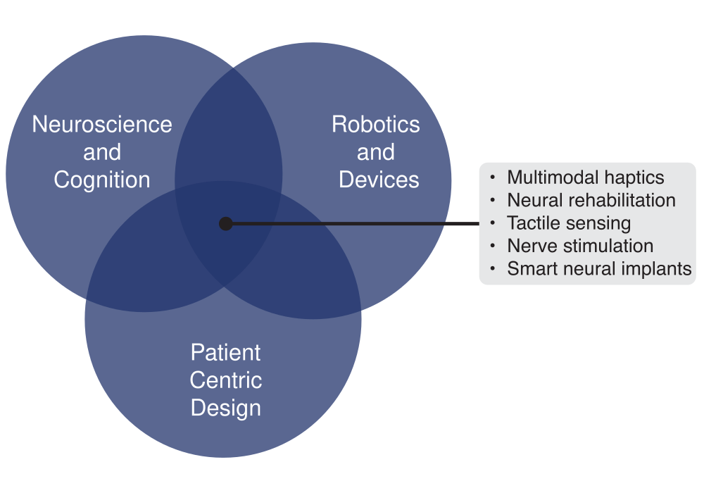

Research
Peripheral Neural Interfaces for Restorative Medicine
My work explores how we can interface with the peripheral nervous system to restore and modulate complex functions affected by injury or disease. From building finger rehabilitation robots to developing neural interfaces for cancer treatment, I design bioelectronic tools that engage peripheral nerves in targeted, minimally invasive ways. This includes non-invasive feedback systems for motor recovery and implantable devices for neuromodulation, all aimed at advancing personalized and accessible therapies.
Bidirectional Interfaces for Human-Robot Teaming
I build systems that treat human-machine interaction as a two-way conversation. My research focuses on designing perceptually calibrated, multimodal feedback interfaces — including soft haptic actuators and biomimetic tactile sensors — that communicate information back to the user in natural, intuitive ways. By studying how sensory cues guide action, I aim to create robotic systems that not only respond to human intent but also shape it through real-time feedback, supporting dexterity, rehabilitation, and adaptive control.

Multisensory information to augment neural pathways.
Neural interfaces: harnessing engineering and biology.
We predict the outcome of actions before even moving?
Deep learning methods for MRI processing.
Automating industrial wild blueberry harvesters.
Hand rehabilitation device for burn patients.